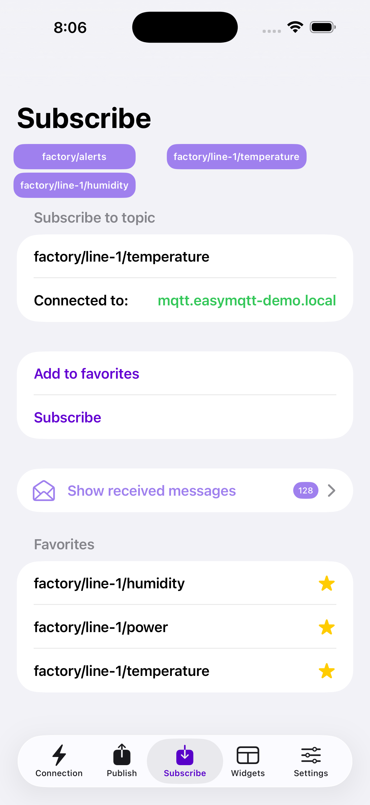
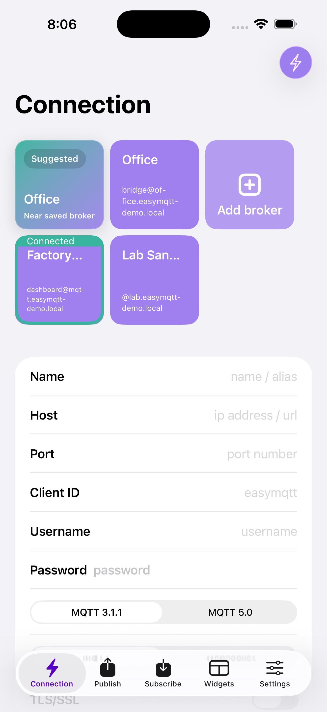
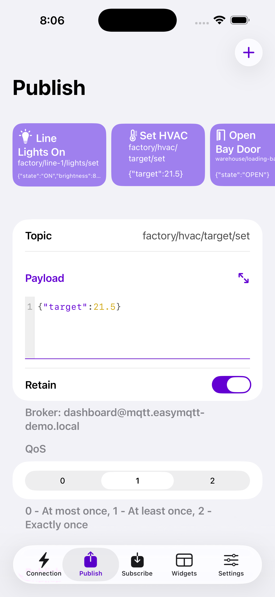
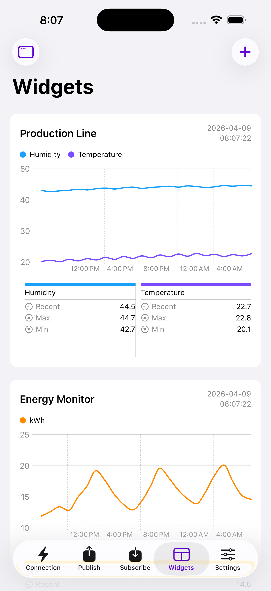
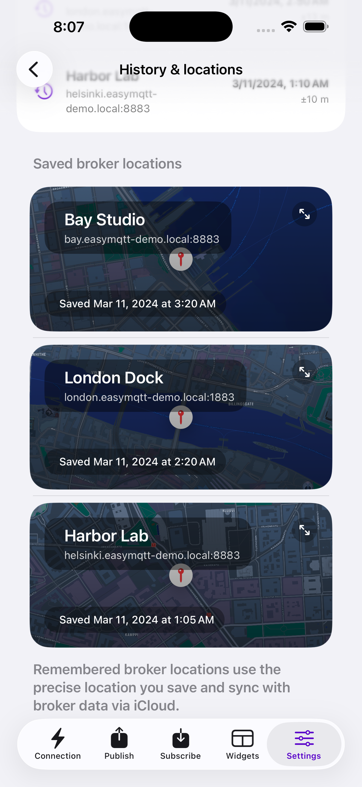

EasyMQTT is a mobile MQTT client for iPhone, iPad, and Mac. Connect securely with MQTT 3.1.1, MQTT 5, WebSockets, TLS, and client certificates, watch topics live, publish commands fast, and build widgets and Shortcuts around your data.

EasyMQTT gives you the workflows that matter on mobile: secure broker access, live topic monitoring, fast publishes, reusable favorites, and glanceable dashboards on the Apple devices you already carry.
Save brokers with MQTT 3.1.1 or 5.0, raw MQTT or WebSockets, TLS/SSL, imported PKCS#12 client certificates, and per-broker credentials. Switch sites in a tap.

Subscribe with wildcards, save favorite topics, filter by QoS and retained state, and inspect JSON payloads with readable formatting when you need to debug fast.
Send one-off messages or save repeatable commands as favorites. Set QoS and retain, then fire off device actions, scene changes, test payloads, or Zigbee2MQTT commands in seconds.

Build graph and multi-graph widgets for sensor data like temperature, humidity, energy, and production metrics. See the numbers that matter without reopening the app.

Save where a broker is usually used, keep a connection history on device, and let Suggested Broker surface the nearest saved broker when you're on site.

Publish with Siri, fetch retained state into Shortcuts, and pin MQTT data to your Home Screen. EasyMQTT plugs brokers, topics, and payloads into the Apple automation stack without making you build around a cloud relay first.
Connect Home Assistant, Zigbee2MQTT, and ESPHome topics to a mobile control panel you can actually use every day.
Check production lines, gateways, HVAC systems, and sensor fleets from the field. Perfect for quick diagnostics, live checks, and glanceable dashboards on iPhone and iPad.
Use EasyMQTT when you need to sniff a topic, verify a retained state, test a command payload, or confirm a broker is behaving before you leave site.
iOS 16+
iPadOS 16+ · ideal for dashboards and message review
Mac Catalyst · same broker, publish, and monitoring workflows
Send and fetch MQTT data inside Apple Shortcuts
EasyMQTT is free to start. Plus unlocks the workflows heavy MQTT users care about: more saved brokers, reusable commands and topics, advanced widgets, Shortcuts, and background-friendly mobile monitoring for people who work with MQTT every day.
Get EasyMQTT PlusTroubleshooting guides, setup tutorials, and direct support for real MQTT workflows.
broker.hivemq.com to confirm the app can reach the network. If that works, check your host, port, credentials, TLS settings, and client ID. The most common problems are the wrong port, a TLS mismatch, or stale broker credentials.Reach out and you'll hear back from the developer. Good support matters when you're debugging brokers, payloads, widgets, or automation flows.
Free to download. Upgrade to Plus for heavier workflows. No ads, privacy-first, and built for people who actually use MQTT.